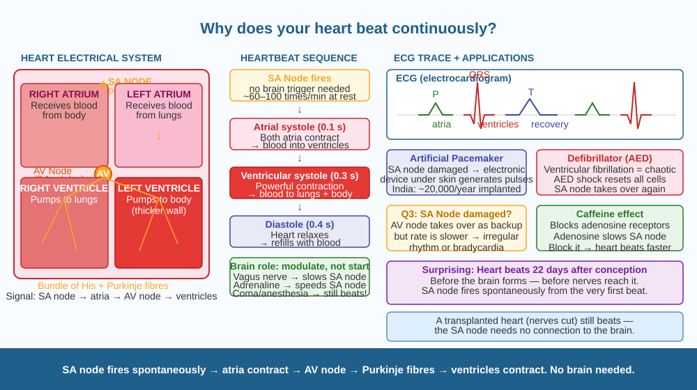

Discover how your heart generates its own electrical signal from birth to death — without any instruction from your brain — and understand exactly what happens during each heartbeat.
You never decide to make your heart beat. You cannot stop it by thinking. If you are anaesthetised for surgery, your heart continues beating without your brain giving any conscious instructions. Even a heart removed from the body continues beating in a saline solution for hours if kept at body temperature. How does the heart keep beating without a brain?
The heart has its own built-in electrical generator.
The sinoatrial node (SA node): the heart's pacemaker
A small cluster of specialised cells in the upper-right wall of the heart (right atrium) called the sinoatrial node or SA node spontaneously generates electrical impulses. This happens through rhythmic changes in ion concentrations across the cell membrane — no external trigger required.
This electrical signal does two things: 1. It travels through the muscle of both atria, causing them to contract (squeeze) and push blood downward into the ventricles. 2. It reaches the atrioventricular node (AV node) — a second cluster of cells between the atria and ventricles. The AV node delays the signal by about 0.1 seconds (allowing the ventricles to fill with blood) and then passes it to the Bundle of His and Purkinje fibres — a network of conducting fibres that spread the signal rapidly through the ventricle walls.
The result: one heartbeat (approximately): - Atrial systole (0.1 s): Atria contract → blood pushed into ventricles - Ventricular systole (0.3 s): Ventricles contract powerfully → blood pushed to lungs (right) and body (left) - Diastole (0.4 s): Heart relaxes, fills with blood again
Normal resting rate: 60–100 beats per minute.
Why the brain is not in charge of the beat:
The brain's autonomic nervous system (specifically the vagus nerve and sympathetic nerves) can speed up or slow down the SA node, but it does not initiate the beat. The SA node fires on its own. This is why: - People in a coma still have a heartbeat - A transplanted heart (with nerves cut) still beats — the SA node runs independently - If the SA node is damaged (as in Q3), the AV node or Purkinje fibres can take over as backup pacemakers — but at slower rates, causing irregular rhythm
The ECG (electrocardiogram): Measures the electrical signals of each heartbeat. Each peak and valley corresponds to a different phase: P wave = atrial contraction; QRS complex = ventricular contraction; T wave = ventricular recovery.
Think of the SA node as a drummer in a band. The drummer sets the tempo — all the musicians (heart muscle cells) follow. The band leader (brain) can ask the drummer to speed up (during exercise: epinephrine stimulates the SA node) or slow down (during sleep: vagus nerve activity). But if the band leader is unconscious (anaesthesia, coma), the drummer keeps the rhythm going independently. If the drummer is injured (SA node damage), a backup drummer (AV node) takes over but plays more slowly.

The diagram shows a cross-section of the heart with four chambers labelled: right atrium, right ventricle, left atrium, left ventricle. The SA node is shown as a yellow star in the upper right atrium. Electrical signal lines radiate from it through the atria, converge at the AV node, then branch through the Bundle of His and Purkinje fibres (shown as a branching tree through ventricular walls). An ECG trace (P, QRS, T) is shown below with labels. Blood flow arrows show: body → right atrium → right ventricle → lungs → left atrium → left ventricle → body.
Measure your resting heart rate: place two fingers on your wrist (radial pulse, thumb side) or your neck (carotid pulse). Count beats for 15 seconds and multiply by 4 (gives beats per minute). Then do 30 jumping jacks as fast as possible. Immediately measure again. Finally, wait 2 minutes and measure a third time. Record all three. The change is your SA node responding to adrenaline during exercise, and then the vagus nerve slowing it back down during recovery.
Atrial fibrillation (AF) is a condition where the SA node's signal is overridden by random electrical impulses from multiple points in the atria — the atria quiver rather than contract (up to 300–600 random contractions per minute). The AV node filters most of these, so the ventricles beat fast and irregularly. AF increases stroke risk by 5× because blood pools in the quivering atria and forms clots. Doctors can treat AF by (a) cardioversion (electric shock to reset), (b) ablation (burning the tissue causing the rogue signals), or (c) anticoagulant drugs to prevent clots. Which approach addresses the underlying electrical cause rather than just the side effect, and why?
What keeps the heart beating without conscious effort?
Why is knowing the mechanism of the heartbeat more useful than just knowing it beats?
If the sinoatrial node were damaged, what would you predict?
An athlete's resting heart rate is 48 beats per minute (lower than the normal 60–80). A sedentary person has a resting heart rate of 82. Both do the same exercise: running for 5 minutes at the same speed. Their maximum heart rates are similar (~190). Predict: (a) How much more cardiac output per minute does the athlete's heart produce at rest (if stroke volume = volume per beat)? (b) Why does regular endurance training lower resting heart rate? (c) If both have a maximum heart rate of 190, which has a larger "heart rate reserve" (difference between max and resting), and why does this matter for performance?
The heart starts beating in a human embryo about 22 days after conception — before the brain forms, before the nervous system connects to it, before the lungs develop. At this point the embryo is only about 3 mm long. The SA node begins firing spontaneously from the very first heartbeats. The electrical system is completely self-contained and does not depend on the brain for its fundamental rhythm. In a sense, your heart "woke up" and started beating before you were ever aware of being alive.
The SA node in the right atrium spontaneously generates electrical impulses. Signal travels: SA node → atria contract → AV node → Bundle of His → Purkinje fibres → ventricles contract. No brain needed. SA node damaged → rhythm fails or slows.